RFID中的调制技术
脉冲调制是将数据的NRZ码变换为更高频率的脉冲串，该脉冲串的脉冲波形参数受NRZ码的值0和1的调制。调制的方式有频移键控(FSK)和相移键控(PSK)。
一、脉冲调制
脉冲调制是将数据的NRZ码变换为更高频率的脉冲串，该脉冲串的脉冲波形参数受NRZ码的值0和1调制。调制方式有频移键控(FSK)和相移键控(PSK)。
1. 频移键控(FSK)
1.1 FSK调制
频移键控（Frequency Shift Keying, FSK）是利用载波频率的变化来传递数字信息的调制方式。发送端根据NRZ码的值，在两个（或多个）不同频率的载波之间进行切换：码元"1"对应频率f₁，码元"0"对应频率f₂。FSK信号的幅度和相位在切换瞬间可以是不连续的（相位不连续FSK），也可以通过特殊设计保持连续（相位连续FSK, CPFSK）。
以二进制FSK（2FSK）为例，2FSK信号就是在两种频率的载波之间切换，可直接用分段表达式表示：
s(t) = A·cos(ω₁t + φ₁)，发送码元"1"时
s(t) = A·cos(ω₂t + φ₂)，发送码元"0"时
其中ω₁=2πf₁、ω₂=2πf₂分别为两个载波的角频率，φ₁、φ₂为各自的初始相位。FSK的本质就是：码元为"1"时输出频率f₁的正弦波，码元为"0"时输出频率f₂的正弦波。
FSK信号的产生方式
方式一：频率选择法（键控法）。 用两个独立的振荡器分别产生频率为f₁和f₂的载波，由NRZ码控制一个电子开关，在两个频率之间切换。该方式实现简单，但切换瞬间相位通常不连续，会产生较宽的频谱旁瓣。
方式二：直接调频法。 将NRZ码（经波形变换后）作为调频信号，对一个载波振荡器进行频率调制，使振荡器输出频率随NRZ码在f₁和f₂之间变化。由于使用同一个振荡器，相位天然连续，属于CPFSK，频谱旁瓣较小，但频率稳定性受调制影响。
以码元序列1 0 1 1为例，FSK调制的输入输出波形如下图所示：
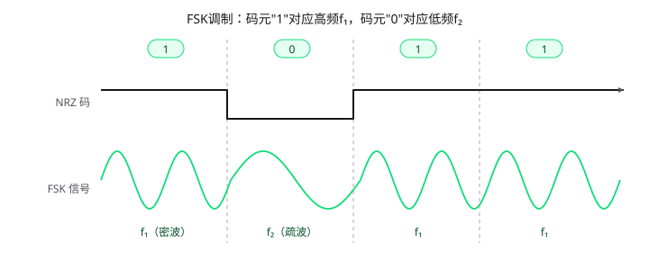
FSK在RFID中的应用
FSK是RFID系统中常用的调制方式，尤其在125kHz低频和13.56MHz高频系统中广泛使用。例如：
- 阅读器→标签（前向链路）：部分系统采用FSK调制，相比ASK具有更强的抗幅度衰落能力；
- 标签→阅读器（反向链路）：标签回传的副载波也常采用FSK（如ISO/IEC 14443中副载波的f_s1/f_s2分别对应数据0/1），此时FSK调制作用在副载波上，再通过负载调制改变反射阻抗，使阅读器线圈电压随之变化。
FSK的优势在于抗噪声、抗幅度衰落性能好；缺点是占用带宽较宽，频谱利用率低于PSK。
1.2 FSK解调
FSK解调的任务是从接收到的FSK信号中恢复出原始的NRZ码，即判断每个码元时段内载波的频率是f₁还是f₂。常用的解调方式有相干解调、滤波非相干解调、正交相乘非相干解调三种。
（1）相干解调
相干解调的信号流程为：接收FSK信号 → 带通滤波(f₁/f₂) → 乘以相干载波 → 低通滤波 → 抽样判决 → NRZ码输出。
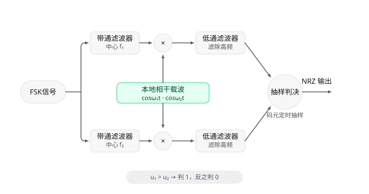
接收信号先经过两个中心频率分别为f₁和f₂的带通滤波器分成两路，每路分别与本地恢复的相干载波cos(ω₁t)、cos(ω₂t)相乘，再经低通滤波器滤除高频分量，最后在码元定时时刻对两路信号抽样并比较大小，判决输出。
以发送码元"1"（载波f₁）为例，接收信号s(t) = A·cos(ω₁t)：
- 上支路相乘：
s(t)·cos(ω₁t) = A/2 + (A/2)·cos(2ω₁t)，经低通滤波后得到u₁ = A/2； - 下支路相乘：
s(t)·cos(ω₂t) = (A/2)·[cos((ω₁-ω₂)t) + cos((ω₁+ω₂)t)]，当f₁、f₂满足正交条件时，经低通滤波后u₂ ≈ 0； - 比较判决：
u₁ > u₂，输出"1"；发送"0"（载波f₂）时则相反，u₂ > u₁，输出"0"。
相干解调的抗噪声性能最好，但它要求本地载波与发送载波严格同频同相，需要额外的载波同步电路（如锁相环），设备复杂，一般用于对性能要求较高的场合。
（2）滤波非相干解调
滤波非相干解调又称包络检波法，其信号流程为：接收FSK信号 → 带通滤波(f₁/f₂) → 包络检波 → 比较判决 → NRZ码输出。
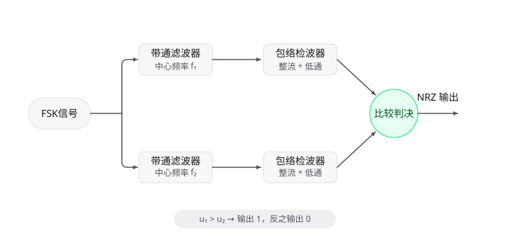
接收信号经过两个中心频率分别为f₁和f₂的带通滤波器后，f₁时段只有上支路有输出、f₂时段只有下支路有输出，从而把频率的差异转换为信号所在支路的差异；再经包络检波（整流+低通滤波）把"有无高频波形"转换为"直流电平的高低"；最后比较两路电平大小：u₁ > u₂判"1"，u₁ < u₂判"0"，即可还原出NRZ码。
以码元序列1 0 1 1为例，各点波形的对应关系如下图所示：
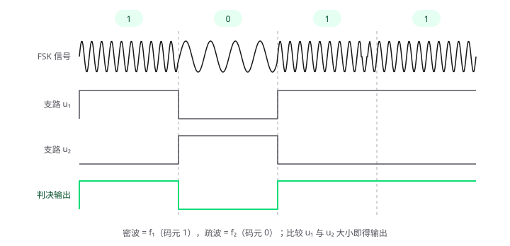
该方式不需要恢复载波的相位信息，电路简单、成本低、功耗小，是RFID系统中最常用的FSK解调方式，但抗噪声性能比相干解调略差。
（3）正交相乘非相干解调
正交相乘非相干解调在每条支路中使用一对正交载波：f₁通道将接收信号同时与cos(ω₁t)和sin(ω₁t)相乘，分别经低通滤波得到I、Q两路信号，再将两路平方相加后开方，得到该通道的输出u₁；f₂通道结构相同，输出u₂。比较u₁、u₂的大小即可判决输出NRZ码。
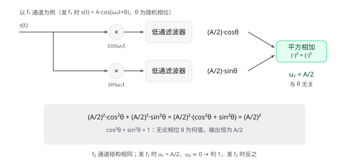
在推导之前，先澄清一个直觉问题：信号又是相乘、又是平方开方，不会"破坏"原来接收到的信号吗？关键在于——解调的目标从来不是保住波形，而是取出信息。天线上收到的高频正弦波本身对数字电路毫无用处，信号中真正有用的只有两样：幅度A（信号多强）和当前频率是f₁还是f₂（码元1还是0）。而随机相位θ是电磁波传播距离随机引入的，它从一开始就不携带任何信息。因此评价这通计算的标准不是"波形变没变"，而是"A和频率归属有没有丢"。逐项核对：
| 项目 | 性质 | 经过运算后 |
|---|---|---|
| 幅度A | 有用信息 | u₁ = A/2，被忠实保留（只差固定比例系数1/2） |
| 频率是f₁还是f₂ | 有用信息 | 转换为"u₁大还是u₂大"，被完整保留 |
| 随机相位θ | 信道强加的无用参数 | 被消去——这是去除污染，不是损失 |
2ω₁高频项 |
乘法造出的中间产物 | 被低通滤除——信号里本来没有它 |
可以用两个极端相位验证：θ=0°时I=A/2, Q=0，θ=90°时I=0, Q=−A/2，两种情况下u₁都等于A/2——输出只反映信号多强，对什么相位无动于衷。反过来，若传播距离变远使A真实衰减一半，输出立刻如实减半，真实的强度变化一点也没丢。
这一点在数学上有严格保证：cos(ω₁t)和sin(ω₁t)构成一组完备的正交基，任何频率为ω₁的正弦信号，无论相位怎么偏，都能被这对载波完整分解、一个分量都漏不掉；而平方相加开方就是勾股定理，把两根轴上的分量重新合成为信号的真实幅度。打个比方：这通计算就像"称重量"——物体被以任意角度摆放（相位θ），分别测出水平、垂直分量（I、Q两路）再用勾股定理合成，无论物体怎么转，重量读数始终正确。此外，平方相加本质上是在做能量累积，两路噪声部分相消、信号部分相加，反而起到了提升信噪比的作用。
下面用完整的数学推导逐步验证这一点。
设发送码元"1"时，接收信号为s(t) = A·cos(ω₁t+θ)，其中θ是电磁波经空间传播后引入的随机相位，接收机无法预知。
第一步：只乘一路余弦，看问题出在哪。
f₁通道先只用本地载波cos(ω₁t)与接收信号相乘：
s(t)·cos(ω₁t) = A·cos(ω₁t+θ)·cos(ω₁t)
利用积化和差公式cos α·cos β = ½·[cos(α−β) + cos(α+β)]，令α = ω₁t+θ，β = ω₁t：
1 | s(t)·cos(ω₁t) = A·½·[cos((ω₁t+θ)−ω₁t) + cos((ω₁t+θ)+ω₁t)] |
结果拆成两项： -
第一项A/2·cosθ：不含时间变量t，是直流分量（DC）；
-
第二项A/2·cos(2ω₁t+θ)：频率为2ω₁，是高频分量。
低通滤波器只允许直流和低频通过，将2ω₁的高频项滤除，因此单路输出为：
u = (A/2)·cosθ
问题在于θ是随机的：θ=0°时输出满幅A/2，θ=60°时只剩0.25A，θ=90°时输出为0——信号明明存在，输出却是零电平，判决电路必然误判。单路输出随随机相位剧烈变化，无法用于判决。
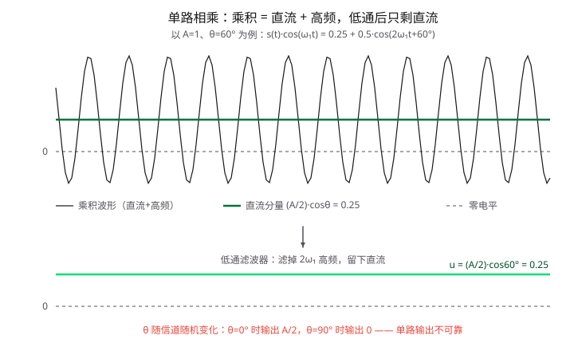
第二步：正交两路相乘，分别求出I路和Q路。
任意相位的正弦波总可以分解为余弦分量与正弦分量两部分。为了不丢失任何一路信息，f₁通道用一对正交载波cos(ω₁t)和sin(ω₁t)分别与接收信号相乘。
I路（乘余弦）： 推导同第一步，低通滤波后得到
I = (A/2)·cosθ
Q路（乘正弦）：
s(t)·sin(ω₁t) = A·cos(ω₁t+θ)·sin(ω₁t)
利用积化和差公式cos α·sin β = ½·[sin(α+β) − sin(α−β)]，令α = ω₁t+θ，β = ω₁t：
1 | s(t)·sin(ω₁t) = A·½·[sin((ω₁t+θ)+ω₁t) − sin((ω₁t+θ)−ω₁t)] |
同样，第一项A/2·sin(2ω₁t+θ)是频率为2ω₁的高频分量，被低通滤除；第二项−A/2·sinθ是直流分量，保留下来。因此Q路输出为：
Q = −(A/2)·sinθ
（负号源于本地正弦载波的极性定义，若本地取−sin(ω₁t)则Q为正，不影响后续平方运算。）
第三步：平方相加开方，消去θ。
I路和Q路的输出分别是(A/2)·cosθ和−(A/2)·sinθ，它们恰好是长度为A/2、方向角为θ的向量在两根正交轴上的投影。将两路平方相加：
1 | I² + Q² = [(A/2)·cosθ]² + [−(A/2)·sinθ]² |
利用三角恒等式cos²θ + sin²θ = 1：
I² + Q² = (A/2)²·1 = A²/4
开方得到f₁通道的输出：
u₁ = √(I² + Q²) = √(A²/4) = A/2
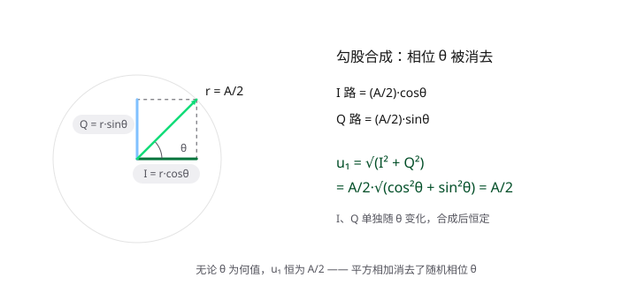
结果中θ被彻底消去：无论载波相位是多少，u₁恒等于A/2。I、Q两路单独看都随θ变化（θ=90°时I路为0、Q路为−A/2），但勾股合成后输出恒定。
第四步：f₂通道的输出验证。
f₂通道结构与f₁通道完全相同，只是本地载波换为cos(ω₂t)和sin(ω₂t)。当发送f₁时，f₂通道的I路：
1 | s(t)·cos(ω₂t) = A·cos(ω₁t+θ)·cos(ω₂t) |
两项的频率分别为|f₁−f₂|和f₁+f₂，均高于基带带宽，经低通滤波后全部被滤除，因此：
I₂ ≈ 0，同理Q₂ ≈ 0，故u₂ = √(I₂² + Q₂²) ≈ 0。
第五步：比较判决。
- 发送"1"（载波f₁）时：
u₁ = A/2，u₂ ≈ 0，u₁ > u₂→ 输出"1"； - 发送"0"（载波f₂）时：由对称性，
u₂ = A/2，u₁ ≈ 0，u₂ > u₁→ 输出"0"。
由于cos²θ + sin²θ = 1，随机相位θ的影响被彻底消去，该方式无需载波同步电路，却能获得接近相干解调的性能，且便于数字化实现，广泛应用于现代数字接收机中。
三种解调方式的比较
| 解调方式 | 是否需要载波同步 | 抗噪声性能 | 电路复杂度 | 适用场合 |
|---|---|---|---|---|
| 相干解调 | 需要 | 最好 | 复杂 | 高性能场合 |
| 滤波非相干解调 | 不需要 | 较差 | 简单 | RFID等低成本、低功耗场合 |
| 正交相乘非相干解调 | 不需要 | 接近相干解调 | 中等 | 数字化接收机 |
为什么需要正交相乘非相干解调
要理解正交相乘非相干解调存在的意义，需要先看清另外两种方式各自的硬伤，再看正交相乘法"多做了什么"来化解这些硬伤。
1. 相干解调的硬伤：必须恢复随机相位θ，代价高昂
接收信号s(t) = A·cos(ω₁t+θ)中的θ是电磁波经空间传播后引入的随机相位，每次通信都不同。相干解调的单路输出为u = (A/2)·cosθ，这个值直接依赖θ：θ=0°时满幅A/2，θ=90°时输出为0。为了让cosθ稳定等于1，必须让本地载波与发送载波严格同频同相，这就需要一套载波同步电路（通常是锁相环PLL）。
PLL带来的代价包括： - 电路复杂、功耗高：PLL本身由鉴相器、环路滤波器、压控振荡器组成，面积和功耗都不小； - 需要锁定时间：每次建立通信都要等待PLL"抓住"相位，锁定期间无法正常解调； - 对频率漂移敏感：收发两端晶振的微小频差会导致相位持续旋转，需要PLL不断追踪，一旦失锁就会大面积误码； - 无源RFID标签无法承受：无源标签靠阅读器辐射的电磁场供电，能量极其有限，装不下也带不动PLL这类复杂电路。
因此，相干解调虽然抗噪性能最好，但"必须同步相位"这一条把它挡在了很多低成本、低功耗、快速启动的场景之外。
2. 滤波非相干解调（包络检波）的硬伤：非线性损失，抗噪性能差
包络检波用二极管整流+低通滤波来提取信号包络。二极管是典型的非线性器件，带来三个问题： - 导通阈值损失：硅二极管有约0.7V的导通压降，信号幅度低于阈值时二极管不导通，小信号直接被吃掉，灵敏度下降； - 非线性失真：二极管的伏安特性是指数曲线而非直线，削取包络的过程会产生谐波失真，降低输出信噪比； - 误码率损失约3dB：由于上述非线性，包络检波的误码率比相干解调差约3dB——意味着要达到相同的差错率，接收信号功率需要大一倍。
此外，包络检波还需要两个模拟带通滤波器（分别让f₁和f₂通过）。模拟滤波器体积大、元件值受温度和工艺影响大、难以集成到数字芯片中，与现代"全数字化接收机"的趋势背道而驰。
3. 正交相乘非相干解调"多做了什么"
正交相乘法针对上述两个硬伤，分别做了针对性的改进：
针对相干解调的硬伤——"不去测θ，而是消去θ"。
它不再试图用PLL把本地载波相位对齐到θ，而是同时用一对正交载波cos(ω₁t)和sin(ω₁t)与接收信号相乘：
- I路（乘cos）输出(A/2)·cosθ； -
Q路（乘sin）输出(A/2)·sinθ。
这两个值单独看都依赖θ（θ=90°时I路为0，θ=0°时Q路为0），但正交相乘法多了一步——平方相加开方：
u₁ = √[(A/2)²·cos²θ + (A/2)²·sin²θ] = A/2
这一步利用恒等式cos²θ+sin²θ=1，把未知的θ彻底消掉了。无论θ是多少，输出恒为A/2。因此：
-
不需要PLL：本地载波只要求频率对准，相位随意——本地振荡器偏多少度，I、Q两路就按比例互换，合成结果不变；
- 没有锁定时间：上电即可工作，启动快； -
对频差不敏感：收发频差只会让I、Q两路同时旋转，合成幅度不受影响。
针对包络检波的硬伤——"用线性乘法代替非线性整流"。 它没有用二极管，而是全程使用乘法器和加法器，这些都是线性器件： - 没有导通阈值：乘法器对任何幅度的信号都线性响应，小信号不会被吃掉，灵敏度高； - 无非线性失真：输出是对信号幅度的精确数学计算，不产生谐波，输出信噪比高； - 误码率损失仅约0.5dB：只比理想相干解调差一点点，远好于包络检波的3dB； - 可全数字化实现：乘法器、平方、开方在DSP/FPGA中就是几条指令，模拟带通滤波器也可以省去（直接靠频率差在乘法后被低通滤除），整个结构几乎全是数字电路，便于集成和量产。
4. 三种方式的代价-性能权衡
| 维度 | 相干解调 | 包络检波 | 正交相乘非相干 |
|---|---|---|---|
| 是否需要相位同步 | 需要（PLL） | 不需要 | 不需要 |
| 检波方式 | 线性乘法 | 非线性二极管 | 线性乘法 |
| 误码率损失 | 0（基准） | ~3dB | ~0.5dB |
| 小信号灵敏度 | 高 | 低（有阈值） | 高 |
| 电路主要开销 | PLL + 乘法器 | 带通滤波器 + 二极管 | 乘法器×2 + 算术单元 |
| 数字化难度 | 难（PLL难数字实现） | 难（模拟滤波器） | 易（几乎全数字） |
总结：正交相乘非相干解调是一个精巧的折中——它用"两路正交乘法 + 平方相加"这一点点额外运算，同时化解了相干解调的相位同步难题和包络检波的非线性缺陷，以接近相干解调的性能、非相干解调的简单性，成为现代数字接收机（包括许多RFID阅读器芯片的接收前端）的主流方案。
2. 相移键控（PSK）
2.1 PSK调制
相移键控（Phase Shift Keying, PSK）是利用载波相位的变化来传递数字信息的调制方式。与FSK用频率携带数据不同，PSK信号的幅度和频率全程保持不变，唯独相位随码元取值跳变：码元"1"对应相位0°，码元"0"对应相位180°（约定可相反）。以二进制PSK（2PSK，又称BPSK）为例，可直接用分段表达式表示：
s(t) = A·cos(ω_c t)，发送码元"1"时
s(t) = A·cos(ω_c t + π) = −A·cos(ω_c t)，发送码元"0"时
利用恒等式cos(θ + π) = −cosθ，"相位跳变180°"在数学上等价于载波极性翻转。因此PSK的本质可以写成极简洁的形式——让载波乘上+1或−1：
s(t) = A·m(t)·cos(ω_c t)，m(t) ∈ {+1, −1}
其中m(t)是由NRZ码变换来的双极性基带信号（"1"→+1，"0"→−1）。
PSK信号的产生方式
方式一：相乘法。 将NRZ码经双极性变换后与载波直接相乘，即得BPSK信号。乘法器输出相位天然连续，实现简单，是最常用的做法。
方式二：相位选择法（键控法）。 用一个振荡器产生0°载波，经倒相器得到180°载波，由NRZ码控制电子开关在两路之间选择输出，效果与相乘法等价。
以码元序列1 0 1 1为例，PSK调制的输入输出波形如下图所示。注意观察：波形的疏密（频率）与包络（幅度）全程不变，唯独在码元取值改变处波形突然上下翻转——这正是相位跳变180°的直观表现；而相邻码元取值相同处（第3、4码元之间）波形平滑连续：
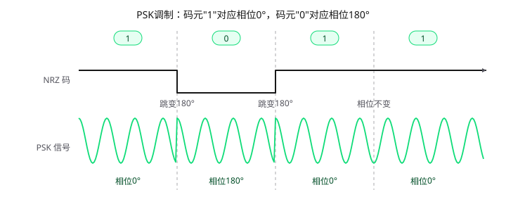
PSK与ASK/FSK的关键区别：恒包络
ASK用幅度携带数据、FSK用频率携带数据，它们的接收端都可以用包络检波这种"看幅度"的廉价办法解调；而PSK是恒包络信号——包络永远是一条平直的直线，数据完全藏在相位里。这决定了PSK"发得简单、收得讲究"：调制端只需一个乘法器，接收端却必须设法测量相位，走不了包络检波的捷径。
PSK在RFID中的应用
- 标签→阅读器（反向链路）：ISO/IEC 14443 Type B标准中，标签将数据对847.5kHz副载波做BPSK调制，再通过负载调制回传给阅读器（详见后文"副载波负载调制"）；部分125kHz低频系统的副载波也采用PSK；
- 阅读器→标签（前向链路）：部分系统采用PSK调制，以获得更强的抗噪声能力。
PSK的优势：包络恒定，不怕放大器的非线性（功放可工作在饱和区，效率高），抗幅度衰落能力强；相同信噪比下误码率优于ASK与FSK；频谱能量集中，频带利用率高。缺点：接收端必须恢复相位信息才能解调，电路复杂；载波恢复存在相位模糊问题（见下文）。
2.2 PSK解调
PSK解调的任务是判断每个码元时段内载波的相位是0°还是180°。由于PSK是恒包络信号，包络检波完全失效——整流后得到的是一条毫无起伏的直流线，数据无从谈起。解调只能"从相位入手"，常用方式有相干解调与差分相干解调两种。
（1）相干解调
相干解调的信号流程为：接收PSK信号 → 带通滤波 → 乘以相干载波 → 低通滤波 → 抽样判决 → NRZ码输出。
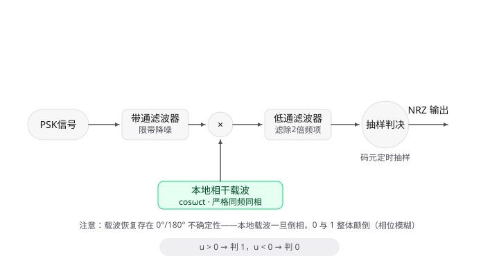
与FSK相干解调需要上下两条支路不同：PSK两种码元共用同一载波频率、仅相位不同，因此一条支路即可完成解调。设接收信号s(t) = A·cos(ω_c t + φ)，φ为0°或180°，与本地相干载波cos(ω_c t)相乘：
s(t)·cos(ω_c t) = (A/2)·cosφ + (A/2)·cos(2ω_c t + φ)
经低通滤波滤去2倍频项，输出u = (A/2)·cosφ：
- φ = 0°（码元"1"）时，u = +A/2；
- φ = 180°（码元"0"）时，u = −A/2。
判决门限设为0：u > 0判"1"，u < 0判"0"。双极性判决的巧妙之处在于：门限0恰好在+A/2与−A/2的正中间，两侧噪声容限都是满幅A/2；而ASK单极性判决的门限必须设在A/2处，噪声容限只有一半。这正是PSK抗噪声性能最优的直观原因。
相位模糊问题。 相干解调要求本地载波与接收载波严格同频同相，而接收端从信号中恢复载波时（平方环、科斯塔斯环等），恢复结果存在"0°还是180°"的不确定性。一旦本地载波倒了相，u的极性整体翻转，判决输出的0与1全部颠倒——整帧数据无一幸免，且接收端毫无察觉。这一缺陷无法靠提高信噪比消除，只能靠差分编码规避，于是有了DPSK。
（2）差分相干解调（DPSK）
差分相干解调（相位比较法）的核心思想是：不恢复载波，用前一个码元的载波相位作为参考基准。相邻码元出自同一发射机、经历同一信道，载波相位高度相关——用"前一码元"当基准，既不需要本地振荡器，也不存在相位模糊。
发送端：先做差分编码。
数据不再直接决定相位取值，而是决定"相位跳不跳"。设绝对码为a_k、相对码为b_k，差分编码规则为：
b_k = b_{k−1} ⊕ a_k（模2加）
即a_k = 0时b_k与前一码元相同（相位不变），a_k = 1时b_k翻转（相位跳变180°）。以绝对码1 0 1 1为例（设初始b_0 = 0）：
| k | 绝对码a_k | 相对码b_k | 载波相位 |
|---|---|---|---|
| 1 | 1 | 1 | 180° |
| 2 | 0 | 1 | 180° |
| 3 | 1 | 0 | 0° |
| 4 | 1 | 1 | 180° |
接收端：相邻码元比相位。 将接收信号分成两路，一路直通、一路延迟一个码元周期T_s，两路相乘后低通滤波：
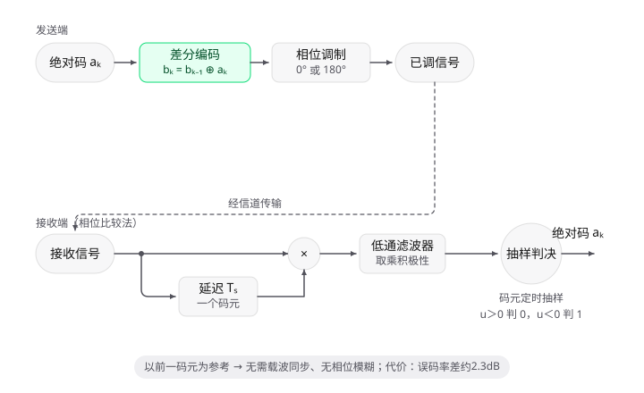
乘积低通后的极性由相邻码元的相位关系决定：
- 相位相同（
a_k = 0，未跳变）→ 乘积为正，u > 0； - 相位相反（
a_k = 1，跳变180°）→ 乘积为负，u < 0。
对u的符号判决即可直接恢复绝对码：u > 0判"0"，u < 0判"1"。
优缺点。 DPSK无需载波同步电路，上电即工作；没有相位模糊——即使整个系统倒相，"跳与不跳"的相对关系也不变。代价是：参考相位来自"带噪的前一码元"而非干净的本地振荡器，噪声在相邻码元间叠加，误码率比相干PSK差约2.3dB；且前一码元一旦判错，会连累当前码元一起错（误码成对出现）。
（3）两种解调方式的比较
| 维度 | 相干解调（2PSK） | 差分相干解调（2DPSK） |
|---|---|---|
| 参考相位 | 本地恢复的载波（PLL） | 前一码元的载波 |
| 是否需要载波同步 | 需要 | 不需要 |
| 相位模糊 | 存在（0°/180°不确定） | 不存在 |
| 误码率 | 最低（基准） | 差约2.3dB |
| 电路复杂度 | 复杂（锁相环） | 简单（延迟器+乘法器） |
| 适用场合 | 高性能、有同步条件 | 快速启动、低成本 |
总结：PSK把数据藏进相位，"发得简单"（乘±1即可）而"收得讲究"——恒包络让包络检波彻底失效，只能从相位中恢复数据。相干解调性能最优，却被载波恢复的相位模糊卡住；DPSK用"差分编码＋相位比较"的组合，以前一码元为参考，一举化解同步与模糊两大难题，代价是约2.3dB的误码率损失。RFID中，ISO/IEC 14443 Type B的反向链路正是采用副载波BPSK，其解调思路与此一致（见后文"阅读器端的两级解调"）。
二、负载调制
脉冲调制解决的是"阅读器怎么把数据发给标签"——阅读器有电源、有发射机，可以主动把数据调制到载波上发射出去。而通信的另一个方向——标签怎么把数据回传给阅读器——则是无源标签面临的难题：标签没有电池，无法主动发射任何电波。负载调制就是解决这一问题的方法：标签通过"改变自己的负载"，使反射阻抗发生变化，从而调制阅读器线圈上的电压幅度，把数据传递回阅读器。
1. 负载与反射阻抗
1.1 负载：消耗电能的那一端
任何一个电路都可以分成两部分：提供电能的电源（信号源），以及接在电源两端、把电能取走并消耗掉的负载——灯泡、电阻、电动机都叫负载。负载"取电取得多不多"用阻抗 Z_L 来衡量，单位是欧姆Ω：
| 状态 | 阻抗大小 | 取电流 | 说法 |
|---|---|---|---|
| 负载重 | 小（如10Ω） | 大 | 电源被"压"得厉害 |
| 负载轻 | 大（如10kΩ） | 小 | 电源几乎不费力 |
| 开路 | ∞ | 0 | 空载 |
| 短路 | 0 | 极大 | 最极端的重载 |
阻抗是电阻的推广：电阻只描述对直流的阻碍，阻抗还包含电感、电容对交流的阻碍，有大小也有相位。标签线圈后接的整流电路、负载电阻，整体对13.56MHz交流呈现的就是一个阻抗。在无源标签中，MOS开关接通负载电阻 → 标签取流变大 = 负载变重；开关断开 = 负载变轻。
1.2 反射阻抗：副边负载"隔空"压到原边
阅读器线圈L₁和标签线圈L₂之间没有任何导线，只有磁场，标签取电流，阅读器凭什么能"感觉"到？靠的是楞次定律：
- 阅读器电流I₁流过L₁，产生交变磁场；
- 磁场穿过L₂，感应出电压，标签回路产生电流I₂；
- I₂流过L₂又产生自己的磁场，方向恰好抵消原磁场的变化（感应电流总是"反抗"引起它的原因）；
- 这个抵消作用传回L₁，等效于在L₁回路里串联了一个额外阻抗——标签在"拖后腿"。
这个等效出来的阻抗就叫反射阻抗（反映阻抗）Z_ref。对两个回路分别列基尔霍夫电压方程（Z₁、Z₂为两个回路自身的总阻抗，Z₂中包含标签负载Z_L）：
1 | 原边：U = Z₁·I₁ + jωM·I₂ （载波源加在原边） |
由副边方程解出I₂ = −jωM·I₁/Z₂，代入原边方程（注意j·(−j) = 1），得到信号源看到的输入阻抗：
Z_in = U/I₁ = Z₁ + (ωM)²/Z₂
第二项就是反射阻抗：Z_ref = (ωM)²/Z₂
这个公式把负载调制背后的物理量化了： - 耦合越紧（M越大）、频率越高（ω越大），反射作用越强——线圈离得远时M趋近0，标签怎么折腾阅读器都感觉不到，这正是通信距离的极限； - 副边负载越重（Z₂越小），Z_ref越大，原边被"压"得越厉害； - 副边开路（Z₂→∞）时Z_ref→0，原边只看到自己的线圈，空载。
1.3 负载调制的工作过程
125kHz和13.56MHz的RFID采用电感耦合：阅读器天线和标签天线通过磁场构成一个松耦合的"变压器"。标签里由数据控制的MOS开关把负载电阻R_L接通或断开：
1 | 标签开关闭合（数据1） |
阅读器线圈上的高频电压幅度随标签数据一鼓一瘪：u₁(t) = U_c·[1 − m·d(t)]·cos(ω_c t)，其中m为调制度（通常只有百分之几），d(t)为NRZ码。阅读器只要检测自己线圈电压的微小起伏，就"隔空"读到了标签的数据——标签全程没有发射任何电波。
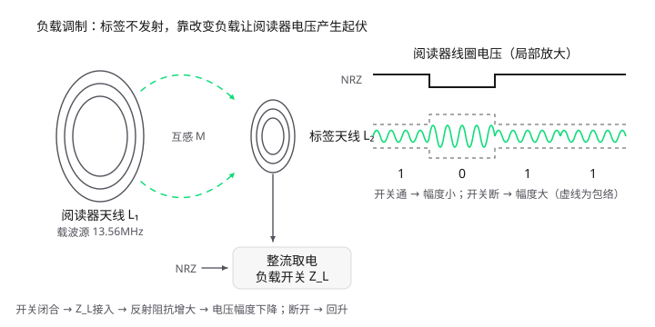
2. 直接负载调制的两个麻烦
直接用NRZ码驱动负载开关（低频125kHz卡常用）在高频、高速率下暴露出两个问题：
麻烦1：边带紧贴载波，而载波比边带强几十万倍。 NRZ码是慢变方波，数据率100kbps时，其频谱只在载波两侧几十至一百多kHz处产生边带。阅读器自己发射的载波是瓦级，而负载调制在阅读器线圈电压上产生的边带分量只有微瓦级，两者功率相差60dB以上。微弱的边带紧紧贴着巨型载波，接收放大器的载波泄漏、相位噪声就会把边带彻底淹没——如同探照灯旁边的萤火虫，滤波器也无法将它们分开。
麻烦2：长连0或长连1时没有交变分量。 这里要区分两个层次：阅读器线圈上始终存在13.56MHz的载波振荡（瞬时值永远在变），负载调制改变的是载波的幅度（包络），而非频率。数据连续为1时开关一直闭合不动，阅读器线圈电压的幅度（包络）保持不变，包络检波后输出直流，没有跳变沿可检测，既收不到数据，也无法从中恢复定时时钟。连续0时同理（开关一直断开）。
3. 副载波负载调制
解决思路很巧妙：不要直接用慢变的NRZ去掰开关，先用NRZ对一个频率较高的方波——副载波f_s——进行键控，再用副载波去驱动负载开关。
3.1 副载波的由来
副载波不需要晶振：标签把收到的13.56MHz载波直接分频即可，f_s = f_c/16 = 847.5kHz（ISO/IEC
14443标准）。分频器只是几个触发器，功耗微乎其微。
3.2 副载波键控方式
- 副载波ASK（OOK）：数据1时副载波存在，0时副载波消失；
- 副载波BPSK：副载波始终存在，数据翻转时副载波相位跳变180°。
3.3 频谱搬移如何化解两个麻烦
以OOK为例，标签负载开关受副载波驱动时，阅读器线圈上被调制后的电压为：
1 | u₁(t) = U_c·cos(ω_c t) + m·U_c·s(t)·cos(ω_s t)·cos(ω_c t) |
由于副载波是方波（含1、2、3…次谐波），频谱上出现的是一组成对的边带：f_c±f_s、f_c±2f_s、f_c±3f_s…，最近的一对也离载波848kHz：
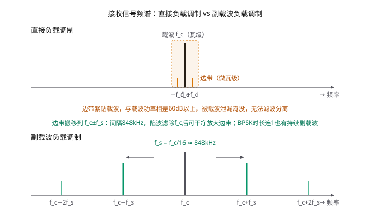
这一下两个麻烦的解决情况如下：
边带与载波之间有848kHz的空档，阅读器用载波陷波器把强载波挡在外面，再用边带滤波器把f_c±f_s挑出来放大——萤火虫被移到了探照灯照不到的地方。注意，这里的"边带"是阅读器线圈电压被负载调制后产生的频谱分量，并非标签主动发射的电波。
对于"长连数据无交变分量"的麻烦，OOK和BPSK的效果不同：
- OOK方式：数据1时副载波存在、开关快速通断，幅度有848kHz起伏；但数据0时副载波消失、开关不动，幅度仍然恒定。因此OOK只能解决长连1，长连0时仍无交变分量，需要配合线路编码（如Miller编码）来规避长连0；
- BPSK方式：副载波始终在振荡，无论数据是0还是1，开关都以848kHz通断，电压幅度始终有848kHz的起伏。数据翻转时只是副载波相位跳变180°，振荡并不中断。因此BPSK能彻底解决长连0和长连1的时钟恢复问题。
4. 阅读器端的两级解调
信号回到阅读器后分两级解调，正好对应标签的两级处理：
- 第一级——从载波里取出副载波：接收信号经载波陷波器（滤除f_c）和中心频率f_c±f_s的边带滤波器，再包络检波，恢复出848kHz副载波；
- 第二级——从副载波里取出NRZ：对副载波再做一次ASK/BPSK解调（方法与第1章的FSK/PSK解调相同），恢复原始NRZ码。
完整的往返链路：
1 | 阅读器：NRZ ──ASK──▶ 13.56MHz载波 ──▶ 电磁场（同时给标签供电） |
5. 电磁反向散射（UHF RFID）
860–960MHz的超高频RFID采用电磁反向散射方式，原理与负载调制同源，只是耦合机制从"磁场变压器"变为"雷达式反射"：标签通过开关在两种天线负载阻抗间切换，改变天线的雷达散射截面（RCS），使反射回阅读器的电磁波幅度（或相位）随之被调制。UHF Gen2标准的反向链路频率BLF约为40–640kHz，作用与副载波类似，但其频率由阅读器下发的参数标定，并非从载波直接分频。
6. 脉冲调制与负载调制的对比
| 维度 | 脉冲调制 | 负载调制（电感耦合） |
|---|---|---|
| 通信方向 | 阅读器→标签（前向链路） | 标签→阅读器（反向链路） |
| 射频能量来源 | 阅读器产生并发射 | 标签不产生，靠反射阻抗变化调制阅读器线圈电压 |
| 标签端硬件 | 接收、解调电路 | 一个负载开关（MOS管） |
| 调制对象 | 直接改变载波的幅度/频率/相位 | 改变反射阻抗Z_ref，间接改变阅读器线圈电压 |
| 信号强度 | 强（瓦级发射） | 极弱（调制度仅百分之几） |
| 典型形式 | ASK（OOK）、FSK、PSK | 负载ASK、负载PSK、副载波负载调制 |
| 作用距离 | 供电+通信双重作用 | 只传数据，距离受限 |
一句话总结：脉冲调制回答"数据怎么印到波形上"，负载调制回答"没有发射机的标签怎么把印好数据的波形送回去"；而副载波则是"先把数据搬到离载波足够远的频率上再做负载调制"，让微弱的回传信号能躲开强载波、被干净地收出来。